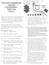
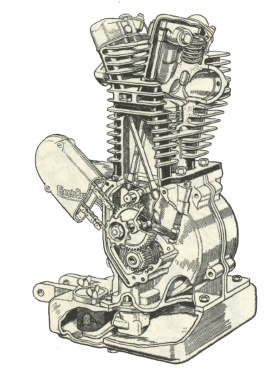
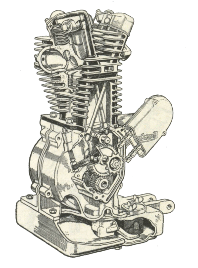

¶ A Two Stroke Engine must have compression above and below the piston rings. We all know about taking engine compression readings from the spark plug hole but a lot of people seem to forget that a two stroke engine must have a sealed bottom end that will hold both compression and vacuum.

When the piston in a two-stroke comes down it compresses the air/fuel charge in the crankcase and pushes it, through the ports in the sides of the cylinder, into the combustion chamber. As the piston rises a vacuum is created under the piston. That vacuum sucks the air/fuel mixture through the carburetor and into the crankcase.
Some guys will use this test after a crankshaft rebuild to make sure the bottomend is sealed right. Call me bad but I never do. I just have never had trouble with crankcase sealing. I always use new seals and I make sure the case sealant is spread evenly and completely on the crankcase edge. I used to use Yamabond #4 but they don't make it anymore so now I use ThreeBond #1194 Liquid Gasket. It seems to work good too. If a center crankcase gasket is called for, instead of sealant, I always use a new gasket.
A word of caution here, if the manufacturer calls for a liquid sealant DO NOT change and use a gasket. Likewise, if a gasket is called for DO NOT discard the gasket and use only liquid sealant. This would cause side clearance problems with the gearbox main and counter shafts not to mention the crankshaft.
The test can be useful for troubleshooting too. If there is a leak it can cause hard starting and poor running. Old seals can become hard and leak. This can cause difficult starting but once started the seal warms up it will work OK. The rest of the day the engine will start fine but if it sits over night, the seal will harden up again. If it leaks on the Magneto side it could be sucking air, leaning out the fuel mixture. This can cause a number of problems ranging from hard starting, poor idle, poor running to overheating the engine and possibly causing a piston seizure. In addition to all these problems, if the seal on the Power-Take-Off side (Clutch side) is leaking, transmission oil can get into the engine causing lots of smoke while running.
The cure for all this is new crankshaft seals. I don't think I have ever seen a leak from the center seams of the crankcase. If there is a hole in the crankcase careful inspection should reveal it. If there is a hole you will need to get new crankcases. I've seen people try to weld holes in crankcases but it almost never works. The heat from the welding warps the crankcases. The one time I did see it work the crankcase required a lot of careful grinding to get the shifter drum to turn. I never did find out how long that engine lasted either.
Just to make things more fun there have been manufacturers in the past who have mounted their seals on the PTO side inboard of the main crankshaft bearing. This is good for main bearing lubrication because the bearing is running in oil. It's bad because to change the seal you have to split the crankcases and pull the bearing. Of course most of the engines that are designed this way are race engines and the seal is easily replaced when you have the crank out for regular maintenance. You do follow Factory maintenance intervals don't you? Good news is most of the newer two-stroke engine designs don't do this any more.
The only problem I have with vacuum testing is that it takes as much time to run the test as it does to just put in new seals. I might feel differently if I got lots of newer bikes in but it always seems that by the time I get the engine it's ten or fifteen years old. Why waste time and money (My time, your money) on a test when it needs new seals anyway? I use the vacuum/pressure gun from my vacuum tester kit all the time... to bleed hydraulic brakes! If you want to run a crankcase compression test that is just fine. I just don't think it is necessary.
Maybe I'm just not a good vacuum tester. I guess I just don't suck good enough!
Here is a PDF file of the above instructions.

 |
 |
Copyright © 1999-2010 dansmc.com. All rights reserved.